Why FoodFyte?
Being college students in a town with poor public transportation and no car has made us realize the impact of food accessibility to our health. Always low on time and options it just becomes much easier to reach for long lasting unhealthy options that can be stocked up on (ex. Ramen, Chips). After dealing with this issue for two years, my neighbors and I developed a system of getting groceries that allows me to ride along with them and shop healthy options.
  